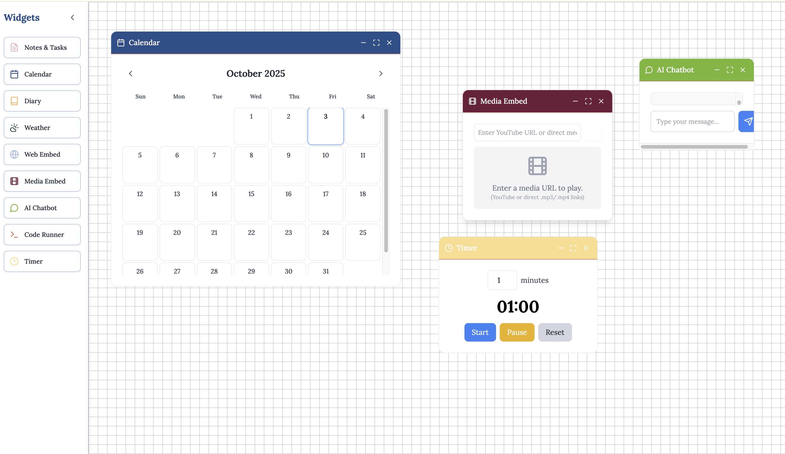
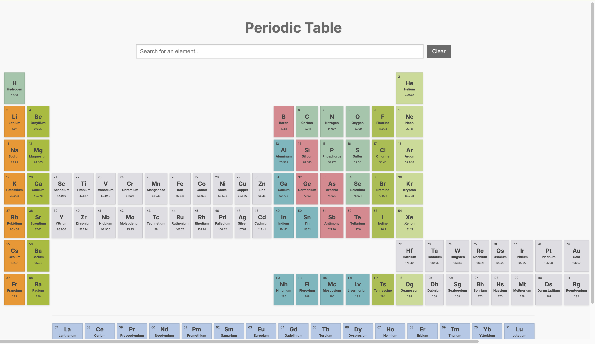
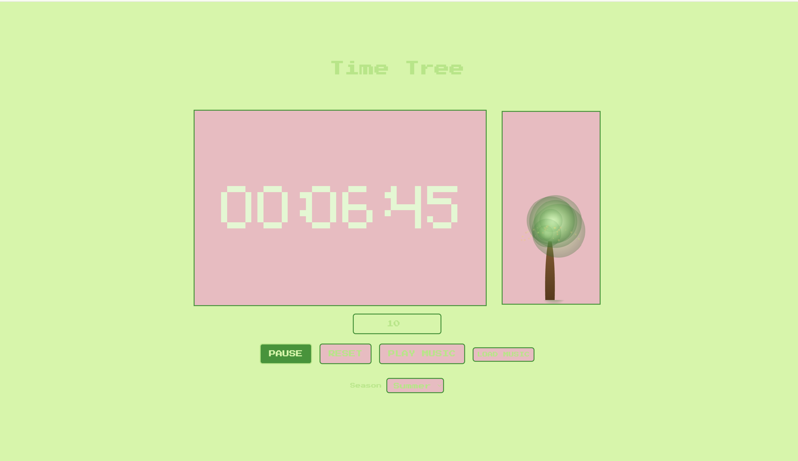

My Projects
Electronic Game Table
At MIT's Engineering Design Workshop, I worked with two others to build an electronic game table. It plays nine different games—Wordle, Backgammon, DnD, and more. Our goal was to combine software and hardware into something fun and functional. I coded the interface using Pygame, and we built the table with 2x4s using MIT's resources. The input is from players interacting with the touchscreen; output is the game display and responses. I learned about teamwork, coding for physical devices, and building tangible projects. It was a great challenge that deepened my interest in programming and making.
Digital Dashboard
I built a Digital Dashboard to solve a personal problem: I was always switching between many tabs and apps to manage my tasks, calendar, and notes. I wanted one place to organize everything simply. I used React, Tauri, and JavaScript/TypeScript to build it. Inputs like tasks and events show clearly on one screen, helping me focus. The project taught me the power of modern web frameworks and desktop wrappers. I enjoy using it because it makes my workflow smoother.
View Live Demo → View Code on GitHub →

Periodic Table
This project is a visual, interactive periodic table I made for myself to explore elements and their properties better. Built with HTML, CSS, and JavaScript, it sorts elements by group and period. Clicking any element shows more info. Color coding highlights categories. Inputs are user clicks; output is element data displayed. I learned about organizing data visually and creating intuitive interfaces. It's both a fun study aid and a way to connect coding with science.
View Live Demo → View Code on GitHub →

Various Python Projects
I've done many Python projects in school ranging from simple to complex. These include a calculator, text-based adventure game, Wordle and Hangman clones, and a few specialized tools. The Equity Advisor Bot helps users reflect on fairness and biases in daily life. The Economic Analysis tool calculates the Gini coefficient to measure income inequality from data. The MCAS Analyzer uses Massachusetts test data to report scores and achievement levels. The Binary Logic Learner trains a perceptron to simulate AND gates. The Reality TV Predictor uses machine learning to forecast outcomes based on various factors. Each project processes inputs and produces useful outputs. These helped me understand coding concepts and real-world applications. I enjoy building tools that range from practical to playful.
Time Tree
Time Tree is a project that shows a growing tree as you focus and work. It provides a calming, visual way to track your productivity and encourages staying on task. I learned how design can support good habits and motivation. It's a gentle reminder that being productive can feel rewarding and stress-free.
View Live Demo → View Code on GitHub →
